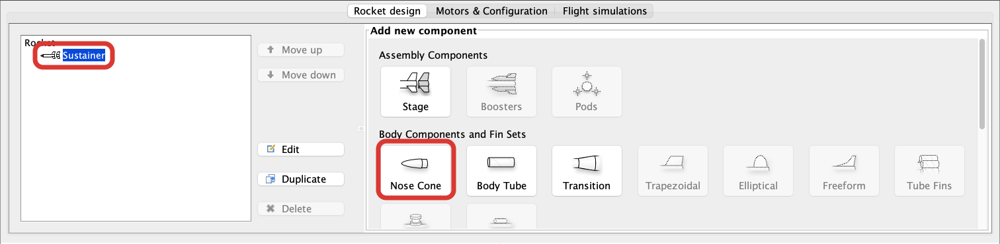
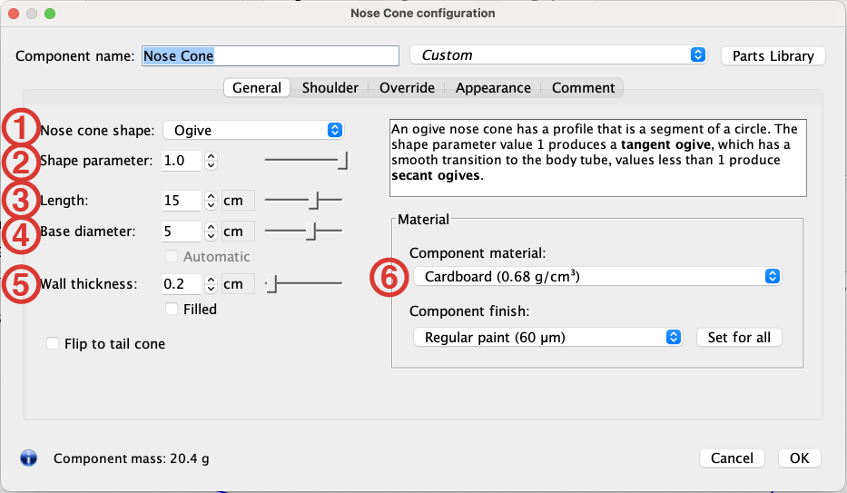

<div id="content-source">
  <div id="openrocket-nose">
    <h2 style="color: var(--content-text)">Designing a Nose in Open Rocket</h2>
    <p>Design your nose in OpenRocket by selecting the Sustainer from the Design Tree and choosing "Nose Cone" from the Add New Component Section. Then either select from a list of pre-designed noses or close it and make your own. The things you <strong>must</strong> modify/confirm are:</p>
    <div class="content-container">
      <div class="content-left">
        <ol><h4>General Tab</h4>
          <li>Nose cone shape: choose from the six shapes above. Read more about each shape <a>here</a></li>
          <li>Nose cone shape: modify the chosen shape</li>
          <li>Length: Adjust to modify your stability</li>
          <li>Base diameter: should match body tube's <strong>outer diameter</strong>.</li>
          <li>Wall thickness: 1.5mm for smaller body tubes (BT-60 or less) and 2 mm for larger body tubes.</li>
          <li>Component Material: PLA 100% Infill</li>
        </ol>
        <ol><h4>Shoulder Tab</h4>
          <li>Diameter: match the <strong>inner diameter</strong> of tube minus 0.2 mm</li>
          <li>Length: 50% to 75% of the diameter of the body tube is appropriate.</li>
          <li>Thickness: match the thickness of the nose.</li>
        </ol>
      </div>
      <div class="content-right">
        
        
        
      </div>
    </div>
    <h3 style="color: var(--table-text)">Video Example</h3>
    <div>
      <iframe
        width= "100%"
        height = 600px
        src="https://www.youtube.com/embed/XiMwgFn-G7s"
        title="AHS Rocketry Nose Cone Design"
        frameborder="0"
        allow="accelerometer; clipboard-write; gyroscope; picture-in-picture"
        allowfullscreen>
      </iframe>
    </div>

  </div>
</div>
